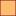

<!doctype html>
<html lang="en">
    <head>
        <meta charset="utf-8">
        <meta http-equiv="X-UA-Compatible" content="IE=edge">
        <meta name="viewport" content="initial-scale=1,user-scalable=no,maximum-scale=1,width=device-width">
        <meta name="mobile-web-app-capable" content="yes">
        <meta name="apple-mobile-web-app-capable" content="yes">
        <link rel="stylesheet" href="css/leaflet.css">
        <link rel="stylesheet" href="css/qgis2web.css"><link rel="stylesheet" href="css/fontawesome-all.min.css">
        <link rel="stylesheet" href="css/leaflet-measure.css">
        <style>
        html, body, #map {
            width: 100%;
            height: 100%;
            padding: 0;
            margin: 0;
        }
        </style>
        <title></title>
    </head>
    <body>
        <div id="map">
        </div>
        <script src="js/qgis2web_expressions.js"></script>
        <script src="js/leaflet.js"></script>
        <script src="js/leaflet.rotatedMarker.js"></script>
        <script src="js/leaflet.pattern.js"></script>
        <script src="js/leaflet-hash.js"></script>
        <script src="js/Autolinker.min.js"></script>
        <script src="js/rbush.min.js"></script>
        <script src="js/labelgun.min.js"></script>
        <script src="js/labels.js"></script>
        <script src="js/leaflet.wms.js"></script>
        <script src="js/leaflet-measure.js"></script>
        <script src="data/nl_offshorewindfarms_4.js"></script>
        <script src="data/NL_EEZUNCLOS_5.js"></script>
        <script>
        var highlightLayer;
        function highlightFeature(e) {
            highlightLayer = e.target;

            if (e.target.feature.geometry.type === 'LineString') {
              highlightLayer.setStyle({
                color: '#ffff00',
              });
            } else {
              highlightLayer.setStyle({
                fillColor: '#ffff00',
                fillOpacity: 1
              });
            }
            highlightLayer.openPopup();
        }
        var map = L.map('map', {
            zoomControl:true, maxZoom:28, minZoom:1
        }).fitBounds([[50.77540252933874,-1.2821285993053053],[55.81691332103429,15.448032306777431]]);
        var hash = new L.Hash(map);
        map.attributionControl.setPrefix('<a href="https://github.com/tomchadwin/qgis2web" target="_blank">qgis2web</a> &middot; <a href="https://leafletjs.com" title="A JS library for interactive maps">Leaflet</a> &middot; <a href="https://qgis.org">QGIS</a>');
        var autolinker = new Autolinker({truncate: {length: 30, location: 'smart'}});
        var measureControl = new L.Control.Measure({
            position: 'topleft',
            primaryLengthUnit: 'meters',
            secondaryLengthUnit: 'kilometers',
            primaryAreaUnit: 'sqmeters',
            secondaryAreaUnit: 'hectares'
        });
        measureControl.addTo(map);
        document.getElementsByClassName('leaflet-control-measure-toggle')[0]
        .innerHTML = '';
        document.getElementsByClassName('leaflet-control-measure-toggle')[0]
        .className += ' fas fa-ruler';
        var bounds_group = new L.featureGroup([]);
        function setBounds() {
        }
        map.createPane('pane_OpenStreetMap_0');
        map.getPane('pane_OpenStreetMap_0').style.zIndex = 400;
        var layer_OpenStreetMap_0 = L.tileLayer('https://tile.openstreetmap.org/{z}/{x}/{y}.png', {
            pane: 'pane_OpenStreetMap_0',
            opacity: 1.0,
            attribution: '',
            minZoom: 1,
            maxZoom: 28,
            minNativeZoom: 0,
            maxNativeZoom: 19
        });
        layer_OpenStreetMap_0;
        map.addLayer(layer_OpenStreetMap_0);
        map.createPane('pane_GEBCO_bathymetry_1');
        map.getPane('pane_GEBCO_bathymetry_1').style.zIndex = 401;
        var layer_GEBCO_bathymetry_1 = L.WMS.layer("https://www.gebco.net/data_and_products/gebco_web_services/web_map_service/mapserv", "GEBCO_LATEST", {
            pane: 'pane_GEBCO_bathymetry_1',
            format: 'image/png',
            uppercase: true,
            transparent: true,
            continuousWorld : true,
            tiled: true,
            info_format: 'text/html',
            opacity: 1,
            identify: false,
            attribution: '',
        });
        map.addLayer(layer_GEBCO_bathymetry_1);
        map.createPane('pane_NL_land_border_2');
        map.getPane('pane_NL_land_border_2').style.zIndex = 402;
        var layer_NL_land_border_2 = L.WMS.layer("https://service.pdok.nl/kadaster/bestuurlijkegebieden/wms/v1_0", "Landgebied", {
            pane: 'pane_NL_land_border_2',
            format: 'image/png',
            uppercase: true,
            transparent: true,
            continuousWorld : true,
            tiled: true,
            info_format: 'text/html',
            opacity: 1,
            identify: false,
            attribution: '',
        });
        map.addLayer(layer_NL_land_border_2);
        map.createPane('pane_NL_maritime_fairways_scematic_3');
        map.getPane('pane_NL_maritime_fairways_scematic_3').style.zIndex = 403;
        var layer_NL_maritime_fairways_scematic_3 = L.WMS.layer("https://service.pdok.nl/rws/nwbvaarwegen/wms/v1_0", "vaarwegvakken", {
            pane: 'pane_NL_maritime_fairways_scematic_3',
            format: 'image/png',
            uppercase: true,
            transparent: true,
            continuousWorld : true,
            tiled: true,
            info_format: 'text/html',
            opacity: 1,
            identify: false,
            attribution: '',
        });
        map.addLayer(layer_NL_maritime_fairways_scematic_3);
        function pop_nl_offshorewindfarms_4(feature, layer) {
            layer.on({
                mouseout: function(e) {
                    for (i in e.target._eventParents) {
                        e.target._eventParents[i].resetStyle(e.target);
                    }
                    if (typeof layer.closePopup == 'function') {
                        layer.closePopup();
                    } else {
                        layer.eachLayer(function(feature){
                            feature.closePopup()
                        });
                    }
                },
                mouseover: highlightFeature,
            });
            var popupContent = '<table>\
                    <tr>\
                        <th scope="row">objectid</th>\
                        <td>' + (feature.properties['objectid'] !== null ? autolinker.link(feature.properties['objectid'].toLocaleString()) : '') + '</td>\
                    </tr>\
                    <tr>\
                        <th scope="row">name</th>\
                        <td>' + (feature.properties['name'] !== null ? autolinker.link(feature.properties['name'].toLocaleString()) : '') + '</td>\
                    </tr>\
                    <tr>\
                        <th scope="row">n_turbines</th>\
                        <td>' + (feature.properties['n_turbines'] !== null ? autolinker.link(feature.properties['n_turbines'].toLocaleString()) : '') + '</td>\
                    </tr>\
                    <tr>\
                        <th scope="row">power_mw</th>\
                        <td>' + (feature.properties['power_mw'] !== null ? autolinker.link(feature.properties['power_mw'].toLocaleString()) : '') + '</td>\
                    </tr>\
                    <tr>\
                        <th scope="row">status</th>\
                        <td>' + (feature.properties['status'] !== null ? autolinker.link(feature.properties['status'].toLocaleString()) : '') + '</td>\
                    </tr>\
                    <tr>\
                        <th scope="row">year</th>\
                        <td>' + (feature.properties['year'] !== null ? autolinker.link(feature.properties['year'].toLocaleString()) : '') + '</td>\
                    </tr>\
                </table>';
            layer.bindPopup(popupContent, {maxHeight: 400});
        }

        function style_nl_offshorewindfarms_4_0(feature) {
            switch(String(feature.properties['status'])) {
                case 'Approved':
                    return {
                pane: 'pane_nl_offshorewindfarms_4',
                opacity: 1,
                color: 'rgba(128,14,16,1.0)',
                dashArray: '',
                lineCap: 'butt',
                lineJoin: 'miter',
                weight: 1.0, 
                fill: true,
                fillOpacity: 1,
                fillColor: 'rgba(253,191,111,1.0)',
                interactive: true,
            }
                    break;
                case 'Construction':
                    return {
                pane: 'pane_nl_offshorewindfarms_4',
                opacity: 1,
                color: 'rgba(247,247,247,1.0)',
                dashArray: '',
                lineCap: 'butt',
                lineJoin: 'miter',
                weight: 1.0, 
                fill: true,
                fillOpacity: 1,
                fillColor: 'rgba(255,233,0,1.0)',
                interactive: true,
            }
                    break;
                case 'Planned':
                    return {
                pane: 'pane_nl_offshorewindfarms_4',
                opacity: 1,
                color: 'rgba(38,89,128,1.0)',
                dashArray: '',
                lineCap: 'butt',
                lineJoin: 'miter',
                weight: 1.0, 
                fill: true,
                fillOpacity: 1,
                fillColor: 'rgba(251,154,153,1.0)',
                interactive: true,
            }
                    break;
                case 'Production':
                    return {
                pane: 'pane_nl_offshorewindfarms_4',
                opacity: 1,
                color: 'rgba(247,247,247,1.0)',
                dashArray: '',
                lineCap: 'butt',
                lineJoin: 'miter',
                weight: 1.0, 
                fill: true,
                fillOpacity: 1,
                fillColor: 'rgba(51,160,44,1.0)',
                interactive: true,
            }
                    break;
            }
        }
        map.createPane('pane_nl_offshorewindfarms_4');
        map.getPane('pane_nl_offshorewindfarms_4').style.zIndex = 404;
        map.getPane('pane_nl_offshorewindfarms_4').style['mix-blend-mode'] = 'normal';
        var layer_nl_offshorewindfarms_4 = new L.geoJson(json_nl_offshorewindfarms_4, {
            attribution: '',
            interactive: true,
            dataVar: 'json_nl_offshorewindfarms_4',
            layerName: 'layer_nl_offshorewindfarms_4',
            pane: 'pane_nl_offshorewindfarms_4',
            onEachFeature: pop_nl_offshorewindfarms_4,
            style: style_nl_offshorewindfarms_4_0,
        });
        bounds_group.addLayer(layer_nl_offshorewindfarms_4);
        map.addLayer(layer_nl_offshorewindfarms_4);
        function pop_NL_EEZUNCLOS_5(feature, layer) {
            layer.on({
                mouseout: function(e) {
                    for (i in e.target._eventParents) {
                        e.target._eventParents[i].resetStyle(e.target);
                    }
                    if (typeof layer.closePopup == 'function') {
                        layer.closePopup();
                    } else {
                        layer.eachLayer(function(feature){
                            feature.closePopup()
                        });
                    }
                },
                mouseover: highlightFeature,
            });
            var popupContent = '<table>\
                    <tr>\
                        <td colspan="2">' + (feature.properties['gml_id'] !== null ? autolinker.link(feature.properties['gml_id'].toLocaleString()) : '') + '</td>\
                    </tr>\
                    <tr>\
                        <td colspan="2">' + (feature.properties['beginLifeSpanVersion'] !== null ? autolinker.link(feature.properties['beginLifeSpanVersion'].toLocaleString()) : '') + '</td>\
                    </tr>\
                    <tr>\
                        <td colspan="2">' + (feature.properties['Country'] !== null ? autolinker.link(feature.properties['Country'].toLocaleString()) : '') + '</td>\
                    </tr>\
                    <tr>\
                        <td colspan="2">' + (feature.properties['localId'] !== null ? autolinker.link(feature.properties['localId'].toLocaleString()) : '') + '</td>\
                    </tr>\
                    <tr>\
                        <td colspan="2">' + (feature.properties['namespace'] !== null ? autolinker.link(feature.properties['namespace'].toLocaleString()) : '') + '</td>\
                    </tr>\
                    <tr>\
                        <td colspan="2">' + (feature.properties['baseline'] !== null ? autolinker.link(feature.properties['baseline'].toLocaleString()) : '') + '</td>\
                    </tr>\
                    <tr>\
                        <td colspan="2">' + (feature.properties['boundary'] !== null ? autolinker.link(feature.properties['boundary'].toLocaleString()) : '') + '</td>\
                    </tr>\
                </table>';
            layer.bindPopup(popupContent, {maxHeight: 400});
        }

        function style_NL_EEZUNCLOS_5_0() {
            return {
                pane: 'pane_NL_EEZUNCLOS_5',
                opacity: 1,
                color: 'rgba(53,121,177,1.0)',
                dashArray: '',
                lineCap: 'square',
                lineJoin: 'bevel',
                weight: 4.0,
                fillOpacity: 0,
                interactive: true,
            }
        }
        map.createPane('pane_NL_EEZUNCLOS_5');
        map.getPane('pane_NL_EEZUNCLOS_5').style.zIndex = 405;
        map.getPane('pane_NL_EEZUNCLOS_5').style['mix-blend-mode'] = 'normal';
        var layer_NL_EEZUNCLOS_5 = new L.geoJson(json_NL_EEZUNCLOS_5, {
            attribution: '',
            interactive: true,
            dataVar: 'json_NL_EEZUNCLOS_5',
            layerName: 'layer_NL_EEZUNCLOS_5',
            pane: 'pane_NL_EEZUNCLOS_5',
            onEachFeature: pop_NL_EEZUNCLOS_5,
            style: style_NL_EEZUNCLOS_5_0,
        });
        bounds_group.addLayer(layer_NL_EEZUNCLOS_5);
        map.addLayer(layer_NL_EEZUNCLOS_5);
        var baseMaps = {};
        L.control.layers(baseMaps,{' NL_EEZ-UNCLOS': layer_NL_EEZUNCLOS_5,'nl_offshore-windfarms<br /><table><tr><td style="text-align: center;"></td><td>Approved</td></tr><tr><td style="text-align: center;"></td><td>Construction</td></tr><tr><td style="text-align: center;"></td><td>Planned</td></tr><tr><td style="text-align: center;"></td><td>Production</td></tr></table>': layer_nl_offshorewindfarms_4,"NL_maritime_fairways_scematic": layer_NL_maritime_fairways_scematic_3,"NL_land_border": layer_NL_land_border_2,"GEBCO_bathymetry": layer_GEBCO_bathymetry_1,"OpenStreetMap": layer_OpenStreetMap_0,}).addTo(map);
        setBounds();
        </script>
    </body>
</html>
